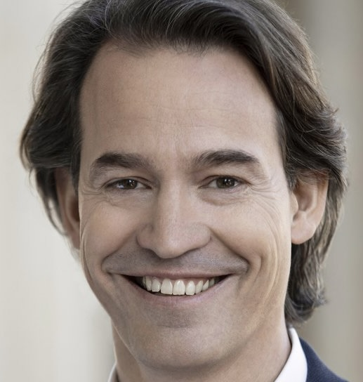
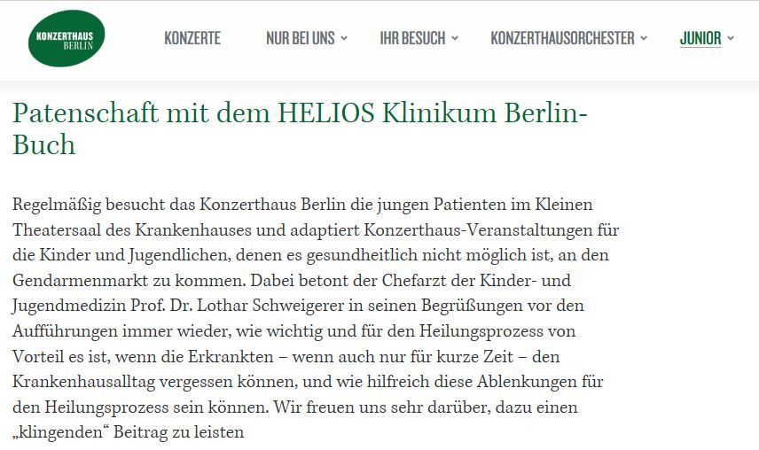
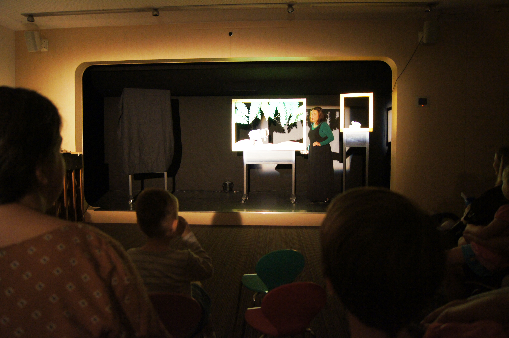

Mit dem Bau der neuen Kinderklinik war zwar der Traum von der Maren-Otto-Kinderklinik gescheitert, dennoch war etwas entstanden, das mir von Anfang an besonders wichtig gewesen war. Mitten in der Klinik befand sich ein kleines Theater mit einer richtigen Bühne. Für manche mag das ungewöhnlich geklungen haben. Für mich gehörte ein solcher Raum zu einer modernen Kinderklinik genauso selbstverständlich wie ein Spielplatz oder das Elternhaus. Schwere Krankheiten bestimmen den Alltag der Kinder oft über Monate. Umso wichtiger war es, ihnen zwischendurch Erlebnisse zu ermöglichen, die nichts mit Medizin zu tun hatten.

Maren Otto wusste, welche Bedeutung dieses Theater für mich hatte. Sie kannte den Intendanten des Konzerthauses Berlin, Sebastian Nordmann, und stellte den Kontakt her. Wenig später führte ich ihn durch die neue Klinik. Als wir schließlich im Theater ankamen, war schnell klar, dass wir dieselbe Vorstellung davon hatten, wie dieser Raum genutzt werden sollte.
Es ging nicht darum, Musiker vor Kinder zu setzen und ein gewöhnliches Konzert zu spielen. Die Veranstaltungen mussten für Kinder gemacht sein. Musik sollte erklärt werden, Instrumente sollten aus der Nähe erlebt werden können, Geschichten erzählt und die Kinder in das Geschehen einbezogen werden. Wer wegen einer Chemotherapie wochenlang das Krankenhaus nicht verlassen konnte, sollte trotzdem Kultur erleben können.

Aus diesem Gespräch entstand eine Zusammenarbeit, die viele Jahre Bestand hatte. Das Konzerthaus Berlin entwickelte gemeinsam mit uns eine eigene Veranstaltungsreihe für unsere Kinderklinik. Damit gehörten wir vermutlich zu den wenigen Krankenhäusern in Deutschland, die regelmäßig Künstler eines großen Konzerthauses im eigenen Theater begrüßen konnten.
Finanziert wurde das Projekt ausschließlich durch Spenden. Ich beteiligte mich selbst an einer Spendenaktion des Konzerthauses am Gendarmenmarkt. Soweit ich mich erinnere, fand dort über mehrere Tage eine ungewöhnliche Aktion statt, bei der auf einem Laufband mit Blick auf den Gendarmenmarkt über mehrere Tage gelaufen wurde. Besucher konnten das Projekt unterstützen, indem sie auf einem Laufband liefen. Und ich lief mit. Es war herrlich, an einem Freitagnachmittag im Freien zu laufen, der Musik des Konzerthauses dabei zu lauschen und gleichzeitig dem Treiben auf dem Gendarmenmarkt zuzuschauen. Und gkeichzeitig für das Konzerthaus Spendengelder zu generieren.


Schon bald fanden im Abstand von etwa ein bis zwei Monaten die ersten Veranstaltungen statt. Das Programm war abwechslungsreich. Musiker erklärten ihre Instrumente, Schauspieler erzählten Geschichten, es gab Schattentheater, afrikanische Musik, kleine Mitmachprogramme und viele Aufführungen, bei denen die Kinder nicht nur Zuschauer waren, sondern selbst einbezogen wurden. Eltern und Geschwister waren selbstverständlich ebenfalls willkommen.
Einmal standen Sebastian Nordmann und ich sogar gemeinsam auf der Bühne und sangen mit den Kindern Frühlingslieder. Dass der Intendant des Konzerthauses und der Chefarzt einer Kinderklinik gemeinsam ein Kinderlied anstimmten, war sicher kein alltäglicher Anblick. Aber genau darum ging es. Für eine Stunde sollte das Krankenhaus einfach in den Hintergrund treten.

Die Veranstaltungen wurden schnell zu einem festen Bestandteil des Kliniklebens. Viele Kinder fragten schon Tage vorher, wann endlich wieder eine Aufführung stattfinden würde. Ich habe oft erlebt, wie Kinder, die am Vormittag noch erschöpft oder bedrückt gewesen waren, nach einer Vorstellung fröhlich und munter auf ihre Station zurückkehrten. Natürlich heilte Musik keine Krankheit. Aber sie machte den Krankenhausalltag leichter.